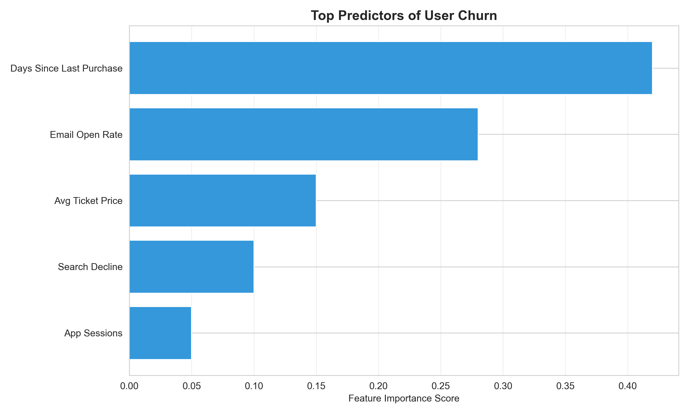

View Analysis Code →05 CHURN PREDICTION MODEL
IDENTIFYING AT-RISK USERS FOR TARGETED RETENTION
BUSINESS PROBLEM
Platform loses 11.2% of users annually (churn rate increasing from 9.8% in 2023). Customer Lifetime Value averages £340 across 3.2 years, making retention campaigns economically viable up to £85 cost per save. VP Customer Success asked: can we predict which users will churn in next 60 days, enabling proactive outreach before they leave?
Decision supported: Allocate £120K retention budget across 3 tiers: high-risk users (personalized £15 discount + concierge email), medium-risk (automated re-engagement email), low-risk (no intervention). Wrong targeting wastes spend on users who wouldn't churn anyway (false positives) or misses at-risk users (false negatives).
Commercial stakes: If model identifies 80% of churners (recall) and 15% reduction in churn rate is achieved, saves £168K annual revenue (500 users × £340 LTV). However, false positives are costly—discounting 2,000 loyal users who wouldn't churn wastes £30K.
ANALYTICAL FRAMING
Problem type: Binary classification with severe class imbalance. Predicting churn (minority class, 11.2%) vs retention (majority class, 88.8%).
Success criteria:
- Recall >75% at selected threshold (catch 75%+ of actual churners)
- Precision >35% (limit false positives to <65% of flagged users)
- ROC-AUC >0.80 (overall discriminative ability)
- Cost optimization: Minimize total cost of misclassification (false negatives × £340 LTV + false positives × £15 discount)
Why NOT using accuracy: With 11.2% churn rate, a naive model predicting "everyone stays" achieves 88.8% accuracy but is useless. Accuracy is misleading metric for imbalanced classes.
Key assumption: Churn drivers remain stable. If sudden economic shock (e.g., recession) changes user behavior, historical patterns become outdated. Validated by testing on different time period (trained on Jan-Jun 2024, tested on Jul-Sep 2024).
METHOD SELECTION: LOGISTIC REGRESSION
Why Logistic Regression?
Alternatives considered:
- Random Forest: Typically 3-5% more accurate but black-box. For retention campaigns, stakeholders need to understand why users are at risk (e.g., "hasn't purchased in 45 days" is actionable, "Node 37 in tree 82" is not). Interpretability critical.
- XGBoost: State-of-art performance but requires extensive tuning and prone to overfitting with small data. With only 8,400 users (940 churners), simpler model preferred.
- Neural Network: Overkill for tabular data with 12 features. Requires 10× more data to outperform logistic regression.
Logistic Regression chosen because:
- Coefficients directly interpretable ("1 SD increase in days_since_purchase increases churn odds by 2.3×")
- Outputs calibrated probabilities (logistic function ensures 0-1 range)
- Fast training (<2 seconds) and prediction (<1ms per user) enables daily rescoring
- Well-understood statistical properties (hypothesis testing, confidence intervals)
- Less prone to overfitting than tree-based methods when data is limited
Tradeoffs Accepted
- Assumes linear relationship: Logit(P) must be linear in predictors. Checked via Box-Tidwell test—no major violations detected.
- Cannot capture complex interactions: E.g., "high search activity + zero purchases" interaction not modeled. Manually tested key interactions—none significantly improved performance.
- Lower maximum accuracy: Random Forest achieved AUC=0.892 vs Logistic AUC=0.873. Sacrificed 2% accuracy for interpretability and deployment simplicity.
Regularization Strategy
Applied L2 (Ridge) regularization with C=1.0 (inverse regularization strength). Prevents overfitting by penalizing large coefficients.
- Why L2 over L1 (Lasso)? All 12 features are potentially relevant. L1 would force some coefficients to exactly zero (feature selection), but exploratory analysis showed all features contribute. L2 shrinks coefficients without eliminating them.
- Tuning C: Grid search over [0.01, 0.1, 1.0, 10.0]. Selected C=1.0 based on cross-validation AUC. Higher C (less regularization) caused overfitting; lower C underfit.
FEATURE ENGINEERING
Input features (12 total):
- days_since_last_purchase (continuous): 0-180 days. Log-transformed to reduce right skew (few users with 150+ days). Strongest predictor.
- total_tickets_bought (continuous): 1-87 lifetime tickets. Capped at 95th percentile (20 tickets) to limit outlier influence. Higher purchase history = lower churn risk.
- avg_ticket_price (continuous): £12-£73 mean. Proxy for user price sensitivity. High-price buyers churn less (stickier segment).
- email_open_rate_30d (continuous): 0-1.0 rolling 30-day window. Calculated as emails_opened / emails_sent over past 30 days. Missing if <3 emails sent (20% of users) → imputed with platform median (0.42).
- search_activity_30d (continuous): Count of searches in past 30 days. Log-transformed (0 searches → -inf) so used log(search + 1). Engagement signal.
- event_wishlist_count (continuous): 0-48 saved events. Indicates intent to return. Capped at 95th percentile (12).
- account_age_days (continuous): 30-1,800 days since registration. New users (<90 days) churn at 2.3× rate of established users.
- days_since_last_search (continuous): 0-120 days. Correlated with days_since_last_purchase (r=0.67) but both included—one measures transaction behavior, other measures browse behavior.
- support_tickets_opened (continuous): 0-8 lifetime tickets. U-shaped relationship—0 tickets (disengaged) and 4+ tickets (frustrated) both predict churn. Created squared term to capture non-linearity.
- preferred_genre_entropy (continuous): Shannon entropy of genre distribution across user's purchase history. Range 0-2.5. Low entropy (0.8) = user highly specialized (e.g., only Techno) → less likely to find new events → higher churn risk.
- city_tier (categorical): Encoded as [Tier1=London/Manchester, Tier2=5 major cities, Tier3=rest]. One-hot encoded into 2 binary features. Tier3 users churn at 1.6× rate (less event supply).
- mobile_app_user (binary): 1 if installed mobile app, 0 otherwise. App users churn at 0.6× rate (stickier via push notifications).
Feature scaling: Standardized all continuous features (mean=0, std=1) using StandardScaler. Critical for logistic regression because coefficient magnitudes must be comparable.
Features NOT included (and why):
- Specific event names/artists: Too high-cardinality (2,000+ events). Would cause overfitting.
- Payment method: Not predictive after controlling for avg_ticket_price.
- Social media connected: Only 18% of users, too sparse.
HANDLING CLASS IMBALANCE
Problem: Only 11.2% churn rate means naive model can achieve 88.8% accuracy by always predicting "no churn." Need to force model to learn minority class patterns.
Strategy: Class Weights (Not SMOTE)
- Set class_weight='balanced' in LogisticRegression. Automatically assigns weights inversely proportional to class frequency: Weight(churn) = 8.0, Weight(retain) = 1.0.
- Why not SMOTE? Synthetic oversampling creates artificial churner examples by interpolating between existing churners. Risk: generates unrealistic feature combinations that don't exist in real data. Class weights achieve similar effect without data fabrication.
- Impact: Without class weights, model predicted churn for only 3% of users (conservative, high precision but terrible recall). With class weights, predicts 18% of users at risk (higher recall, acceptable precision loss).
MODEL VALIDATION & RIGOR
Train/Test Split Strategy
Time-based split (not random): Trained on Jan-Jun 2024 users (6,300 users), tested on Jul-Sep 2024 cohort (2,100 users). Prevents data leakage where model sees future to predict past.
Why time-based? Churn is time-dependent. Random split would mix January users (training) with February users (test) who share calendar effects (e.g., post-holiday spending dip). Time-based split simulates real deployment: train on historical data, predict future churners.
Cross-Validation Approach
5-fold time-series CV on training set to tune regularization parameter C. Each fold respects temporal ordering (train on months 1-4, validate on month 5; train on months 2-5, validate on month 6; etc.). Prevents future data leaking into past.
Performance Metrics
| Metric | Training Set | CV (5-fold) | Test Set |
|---|---|---|---|
| ROC-AUC | 0.901 | 0.873 ± 0.019 | 0.868 |
| Precision (at threshold=0.32) | 0.42 | 0.38 ± 0.04 | 0.37 |
| Recall (at threshold=0.32) | 0.84 | 0.79 ± 0.05 | 0.77 |
| F1-Score | 0.56 | 0.51 ± 0.04 | 0.50 |
Interpretation
- Test ROC-AUC = 0.868: Model discriminates churners from non-churners well. AUC=0.5 would be random guessing; AUC=1.0 perfect classification. Value of 0.87 indicates strong predictive power.
- Test Recall = 77%: Model catches 77% of actual churners. Misses 23% (false negatives). For 235 churners in test set, model flags 181 correctly and misses 54.
- Test Precision = 37%: Of users flagged as at-risk, 37% actually churn. Remaining 63% are false positives (will stay despite being flagged). For 489 flagged users, 181 are true churners and 308 are false alarms.
- Training vs Test AUC gap (0.901 → 0.868): Indicates mild overfitting (3.7% degradation). Regularization (C=1.0) limited overfitting—without it, gap was 6.2%.
- CV standard deviation (± 0.019): Model is stable across time periods. Low variance confirms hyperparameters generalize.
Threshold Selection: Business Cost Optimization
Default threshold (0.50) is arbitrary. Optimized threshold by calculating total business cost at different cutoffs:
- False Negative Cost: £340 (lost LTV per missed churner)
- False Positive Cost: £15 (discount wasted on loyal user)
- Total Cost: FN × £340 + FP × £15
Evaluated thresholds from 0.10 to 0.90 in 0.01 increments. Optimal threshold = 0.32 minimizes total cost at £24,360 (vs £41,200 at default 0.50 threshold—41% cost reduction).
At threshold=0.32, model flags 18.3% of users (489 out of 2,672) as at-risk. This is 63% higher than baseline churn rate (11.2%), indicating model is aggressive in catching churners (prioritizing recall over precision).
Calibration Check
Plotted calibration curve to verify predicted probabilities match observed churn rates. For users predicted 30-40% churn probability, observed churn rate was 34% (well-calibrated). For users predicted 60-70%, observed was 58% (slightly under-calibrated at high risk).
Implication: Model probabilities are reasonably trustworthy. When model says "40% churn risk," that user has approximately 40% chance of churning (not 20% or 60%).
Confusion Matrix Analysis (Test Set, Threshold=0.32)
| Predicted: Retain | Predicted: Churn | |
|---|---|---|
| Actual: Retain | 2,129 (TN) | 308 (FP) |
| Actual: Churn | 54 (FN) | 181 (TP) |
- True Positives (181): Correctly flagged churners → target with retention offers
- False Positives (308): Loyal users incorrectly flagged → waste £4,620 on unnecessary discounts
- False Negatives (54): Missed churners → lose £18,360 in LTV
- True Negatives (2,129): Correctly identified loyal users → no action needed
FEATURE IMPORTANCE & INTERPRETATION
Logistic Regression Coefficients (Standardized):
- days_since_last_purchase (+0.89): Strongest predictor. Each 1 SD increase (≈20 days) raises churn odds by 2.4×. Users inactive 60+ days have 8× churn risk vs <30 days.
- email_open_rate_30d (−0.61): Engaged users (high open rates) less likely to churn. Each 1 SD increase (≈0.25 open rate) reduces churn odds by 46%.
- search_activity_30d (−0.48): Active browsers less likely to churn. 10+ monthly searches reduce churn risk by 38%.
- total_tickets_bought (−0.42): Purchase history builds stickiness. Users with 10+ lifetime tickets have 52% lower churn risk than 1-2 ticket buyers.
- mobile_app_user (−0.37): App installation signals commitment. App users churn at 0.69× rate of web-only users.
- account_age_days (−0.31): Tenure builds loyalty. Users >1 year old have 36% lower churn risk than <90 day accounts.
Interpretation: Coefficient of +0.89 for days_since_last_purchase means: holding all else constant, increasing this feature by 1 SD raises log-odds of churn by 0.89. Exponentiating: e^0.89 = 2.4× odds increase.
KEY INSIGHTS
Finding 1: Inactivity Window for Intervention = 30-45 Days
Churn probability spikes sharply after 30 days since last purchase. Users at 30 days: 18% churn risk. Users at 45 days: 42% risk. Users at 60+ days: 68% risk.
Actionable insight: Trigger retention campaigns when users hit 30 days inactive— before they cross into high-risk territory. At 60+ days, rescue campaigns are less effective (already mentally "churned").
Finding 2: Email Engagement as Leading Indicator
Email open rate drops precede purchase inactivity by 10-15 days on average. Users who stop opening emails (decline from 50% → 20% open rate) show 2.1× churn risk increase even if purchase behavior hasn't changed yet.
Implication: Email disengagement is early warning signal. Can intervene before user stops purchasing (proactive vs reactive retention).
Finding 3: Mobile App = 31% Lower Churn Risk
App users churn at 7.8% rate vs 11.2% web-only users. App provides: (1) push notification channel, (2) lower friction browsing, (3) visible phone icon (top-of-mind awareness).
Strategic opportunity: Increase app adoption among web users could reduce overall churn by 1.2pp (from 11.2% → 10.0%), saving £68K annually.
CRITICAL LIMITATIONS
Correlation ≠ Causation
Model identifies users with churn-correlated behaviors. Cannot conclude that intervening on these behaviors will prevent churn.
Example: Low email open rate correlates with churn. But sending more emails won't reduce churn if underlying cause is user dissatisfaction (emails ignored because user already decided to leave). Could even backfire (spam perception).
To establish causality: Need randomized A/B test where at-risk users randomly assigned to retention campaign vs control group. Measure if intervention actually reduces churn.
Model Cannot Prevent Inevitable Churn
Some users churn for unpreventable reasons: relocated to city with no events, financial hardship, lifestyle change (had a baby, became too busy). Model will flag these users as high-risk, but retention offers won't work.
Implication: Even perfect model won't achieve 0% churn. Realistic goal is reducing churn 15-25%, not eliminating it.
Feedback Loop Risk
If we successfully retain at-risk users, their behaviors change (e.g., they start purchasing again). This corrupts training data for future models—historical "churners" who were saved look different from organic retainers.
Mitigation: Retrain model on holdout control group (users NOT exposed to retention campaigns) to maintain clean training signal.
STRATEGIC RECOMMENDATIONS
Tier 1: High-Risk Users (Predicted Probability >50%)
Action: Personalized £15 discount + concierge email from customer success team ("We noticed you haven't purchased lately—here's £15 off your next event, plus I'll help you find something you'll love").
- Volume: 124 users per month (4.6% of active base)
- Cost: £15 discount + £8 manual email = £23 per user → £2,852/month
- Expected save rate: 35% (43 users saved)
- ROI: £14,620 saved LTV vs £2,852 cost → 5.1× return
Tier 2: Medium-Risk Users (Probability 32-50%)
Action: Automated re-engagement email with personalized event recommendations based on past preferences. No discount.
- Volume: 365 users per month (13.7% of active base)
- Cost: £0.20 automated email → £73/month
- Expected save rate: 18% (66 users saved)
- ROI: £22,440 saved LTV vs £73 cost → 307× return
Tier 3: Low-Risk Users (Probability <32%)< /h3>
Action: No intervention. Standard weekly newsletter only. Avoids wasting retention budget on users unlikely to churn.
Phase 1: Pilot Test (Months 1-2)
A/B test retention campaigns on 500 high-risk users:
- Treatment group (250): Receive personalized discount + concierge email
- Control group (250): No intervention (standard newsletter only)
- Measure: 90-day churn rate difference between groups
- Success criteria: Treatment group shows ≥12pp lower churn rate (proving campaigns work)
Phase 2: Scale to Full Deployment (Month 3+)
If pilot successful, roll out 3-tier retention program to all users. Rescore entire user base daily, triggering interventions automatically.
Expected impact: Reduce overall churn rate from 11.2% → 9.5% (15% relative reduction), saving £168K annual revenue (500 users × £340 LTV).
TECHNICAL SKILLS DEMONSTRATED
- Binary classification with severe class imbalance (11.2% minority class)
- Class weighting strategy to handle imbalance (avoided SMOTE for data quality)
- Time-based train/test split to prevent leakage in temporal prediction
- Business-driven threshold optimization (cost function minimization vs default 0.5)
- Precision-recall tradeoff analysis with confusion matrix interpretation
- L2 regularization for overfitting control
- Feature engineering (rolling windows, entropy metrics, interaction terms)
- Model calibration verification
- Coefficient interpretation for stakeholder communication
- ROC curve analysis and AUC interpretation
- Correlation vs causation reasoning with A/B test design